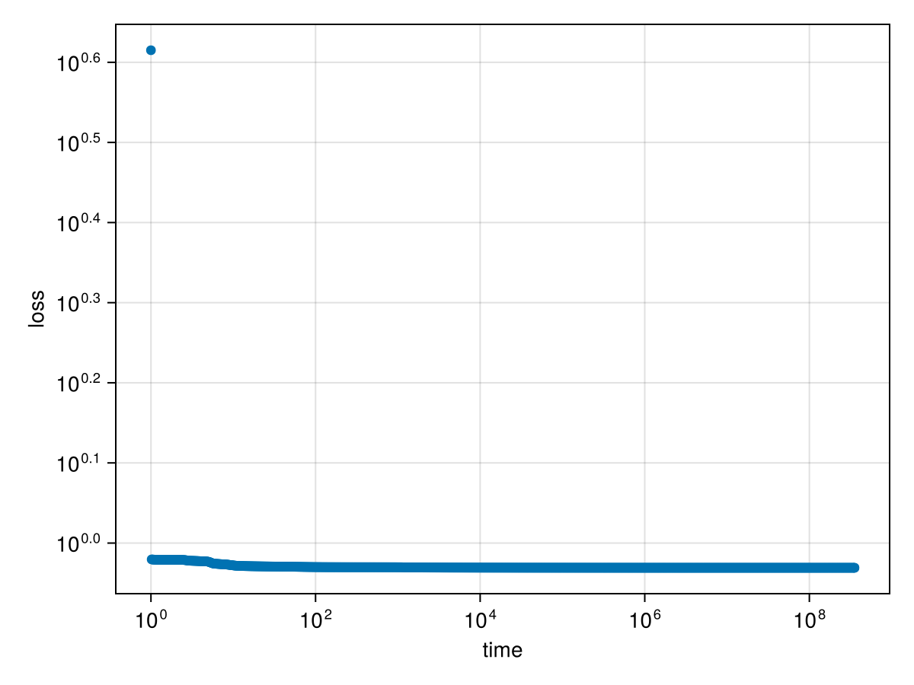

In the following example, we train a network with one hidden layer of 5 softplus neurons on random in- and output.
using MLPGradientFlow, Random
Random.seed!(123)
input = randn(2, 1_000) # 2-dimensional random input
target = randn(1, 1_000) # 1-dimensional random output
net = Net(; layers = ((5, softplus, true), # 5 relu neurons with biases
(1, identity, true)), # 1 identity neuron with bias
input,
target)
p = random_params(net)
result = train(net, p, maxtime_ode = 20., maxtime_optim = 20., n_samples_trajectory = 10^3)Dict{String, Any} with 20 entries:
"gnorm" => 0.00159372
"init" => Dict("w1"=>[0.149272 -0.196412 0.0; -0.329254 0.715402…
"x" => Dict("w1"=>[396.053 996.635 -888.353; -1405.41 1378.96…
"optim_stopped_by" => "maxtime > 20.0s"
"loss_curve" => [4.12157, 0.954065, 0.953854, 0.9537, 0.953578, 0.9534…
"target" => [0.911875 -0.792403 … -0.313917 -1.1881]
"optim_iterations" => 37316
"ode_stopped_by" => "maxtime > 20.0s"
"ode_iterations" => 15837
"optim_time_run" => 20.0008
"converged" => false
"ode_time_run" => 20.0204
"loss" => 0.93138
"input" => [0.808288 -1.10464 … 0.723346 -0.0100866; -1.12207 -0.…
"trajectory" => OrderedDict(0.0=>Dict("w1"=>[0.149272 -0.196412 0.0; -…
"ode_x" => Dict("w1"=>[238.906 602.853 -537.484; -813.389 798.585…
"total_time" => 58.1338
"ode_loss" => 0.931382
"layerspec" => ((5, "softplus", true), (1, "identity", true))
"gnorm_regularized" => 0.00159372We see that optimization has found a point with a very small gradient:
gradient(net, params(result["x"]))ComponentVector{Float64}(w1 = [6.098171657086067e-10 1.2037124469940301e-9 1.3162634836485166e-9; -4.002974025580966e-11 -9.415494973914034e-10 2.021144450772036e-10; … ; -0.00011347421017524889 9.575466650265724e-5 -0.00022700014688541614; 5.268769427618903e-5 -5.308847553319297e-5 0.00010530242662747468], w2 = [0.001593716099978917 0.0006384120850050939 … 5.731425378276915e-8 1.975792721021108e-6])Let us inspect the spectrum of the hessian:
hessian_spectrum(net, params(result["x"]))LinearAlgebra.Eigen{Float64, Float64, Matrix{Float64}, Vector{Float64}}
values:
21-element Vector{Float64}:
-3.12910506778895e-11
3.6443490257050606e-13
1.867666328170921e-11
6.471155184308874e-10
1.943215445447629e-8
5.3367371321097915e-8
1.2689116877631157e-7
1.388035979543324e-6
0.00041796298133717035
0.0026344936845060195
⋮
0.49897531062825135
7.986751873730518
29.42732577572924
59.36959949457466
108321.15150349533
162664.9106680508
241275.7474027053
1.54132354120861e6
4.731673510714444e6
vectors:
21×21 Matrix{Float64}:
-0.0332824 -0.0372588 -0.274746 … 1.80754e-8 4.6623e-9
-0.0167006 0.463801 -0.0595088 -1.82447e-7 -1.29443e-7
-8.44065e-6 4.85222e-11 1.82092e-6 0.0543648 0.363832
8.04748e-6 3.22389e-7 -2.83431e-6 -0.0970677 -0.684586
1.64771e-6 2.0539e-7 2.30808e-6 0.0426831 0.321076
-0.0837645 -0.0932735 -0.696073 … -4.75863e-8 -8.20179e-9
0.0164174 -0.454651 0.0555568 1.4362e-7 4.65015e-8
5.92453e-6 1.66306e-7 -6.79787e-7 -0.401259 0.0511321
-4.80884e-6 -4.78778e-8 2.30447e-6 0.756824 -0.0987757
-7.29986e-7 2.2466e-8 -8.70312e-7 -0.35589 0.0477133
⋮ ⋱ ⋮
-5.99346e-7 2.77659e-7 -4.96961e-7 0.0362036 -0.217936
7.39106e-7 2.97307e-7 -8.16351e-7 -0.0737887 0.409929
2.99122e-7 2.80794e-7 -6.22813e-7 0.0376402 -0.192161
2.56586e-8 2.86662e-8 2.12674e-7 … -0.0532093 -0.00734815
6.71626e-9 -1.88963e-7 2.3132e-8 -0.338154 -0.169445
-0.71394 -0.0143455 0.149261 2.0853e-5 -0.000452507
0.688994 0.0144 -0.0116935 3.02877e-5 -0.000443189
0.0249469 -5.43948e-5 -0.137565 4.05375e-5 -0.000431983
0.0 0.0 0.0 … 6.67897e-5 -0.000322356The eigenvalues are all positive, indicating that we are in a local minimum.
using CairoMakie
function plot_losscurve(result; kwargs...)
f = Figure()
ax = Axis(f[1, 1], yscale = log10, xscale = log10, ylabel = "loss", xlabel = "time", kwargs...)
scatter!(ax, collect(keys(result["trajectory"])) .+ 1, result["loss_curve"])
f
end
plot_losscurve(result)